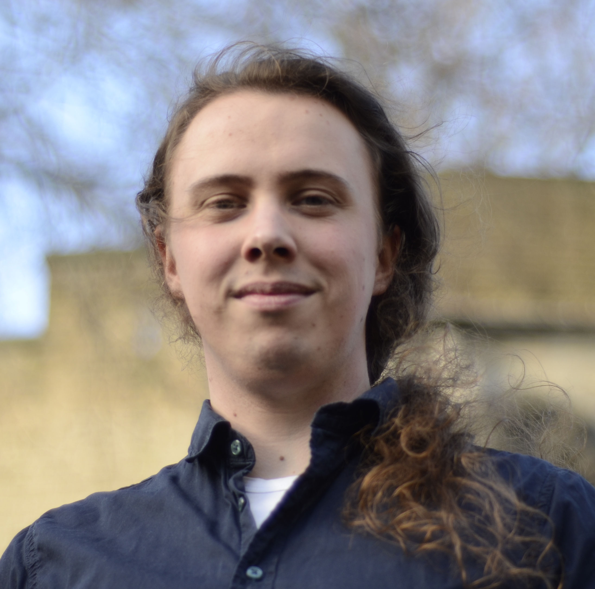

Personal Information
| Face |  |
|---|---|
| Name | Daniël (Daan) M. H. van Gent |
| Position | Postdoc Algebra & Number Theory |
| Institution | Leiden University |
| d.m.h.van.gent@math.leidenuniv.nl | |
| dmhvg@cwi.nl | |
| Promotors | Hendrik Lenstra, Ronald van Luijk |
| Interests | Number Theory, Lattice Cryptography |
| Orcid | 0000-0001-9600-5954 |
Publications
| Title | On Module Lattices with Galois-Symmetries: What you see is not what you get |
|---|---|
| Authors | Ronald Cramer, Daniël van Gent, Andrea Lesavourey, Alice Pellet-Mary |
| Date | 2026, September |
| Journal | NuTMiC 2026 |
| Access | TBD |
| Title | Polynomial-time Algorithms in Algebraic Number Theory: Based on Lectures by Hendrik Lenstra |
|---|---|
| Authors | Daniël van Gent |
| Date | 2026, May |
| Journal | Number Theory Informed by Computation, IAS/Park City Mathematical Series, Volume 29 |
| Access |
doi.org/10.1090/ |
| Title | A Search to Distinguish Reduction for the Isomorphism Problem on Direct Sum Lattices |
|---|---|
| Authors | Daniël van Gent, Wessel van Woerden |
| Date | 2025, December |
| Journal | Asiacrypt 2025, Lecture Notes in Computer Science, Volume 16247 |
| Access |
doi.org/10.1007/ |
| Title | HAWK: Having Automorphisms Weakens Key |
|---|---|
| Authors | Daniël van Gent, Ludo Pulles |
| Date | 2025, July |
| Journal | IACR Communications in Cryptology, Volume 2, Issue 2 |
| Access | doi.org/10.62056/a3qjp2w9p |
| Title | Realizing orders as group rings |
|---|---|
| Authors | Hendrik Lenstra, Alice Silverberg, Daniël van Gent |
| Date | 2024, March |
| Journal | Journal of Algebra, Volume 641 |
| Access |
doi.org/10.1016/ |
| Title | Non-abelian Flows in Networks |
|---|---|
| Authors | Daniël van Gent |
| Date | 2023, April |
| Journal | Journal of Graph Theory, Volume 104, Issue 1 |
| Access | doi.org/10.1002/jgt.22958 |
| Title | Order versus Chaos |
|---|---|
| Authors | Mark van den Bergh, Sipke Castelein, Daniël van Gent |
| Date | 2020 |
| Journal | 2020 IEEE Conference on Games |
| Access |
doi.org/10.1109/ |
Other works
| Title | Decompositions in algebra |
|---|---|
| Authors | Daniël van Gent |
| Date | 2024, March |
| Description | PhD thesis |
| Access |
hdl.handle.net/ |
| Title | Indecomposable Algebraic Integers |
|---|---|
| Authors | Daniël van Gent |
| Date | 2021, October |
| Description | Manuscript under review |
| Access |
arxiv.org/abs/ |
| Title | Algorithms for finding the gradings of reduced rings |
|---|---|
| Authors | Daniël van Gent |
| Date | 2019, August |
| Description | Master thesis |
| Access |
hdl.handle.net/ |
Talks
| Title | On Module Lattices with Galois-Symmetries: What you see is not what you get |
|---|---|
| Date | 2026, September |
| Audience | NuTMiC, University of Warsaw |
| Webpage | nutmic.us.edu.pl |
| Title | TBD |
|---|---|
| Date | 2026, August |
| Audience | CLAW workshop, CRYPTO 2026, University of California |
| Webpage |
sites.google.com/ |
| Title | A Search to Distinguish Reduction for the Isomorphism Problem on Direct Sum Lattices |
|---|---|
| Date | 2025, December |
| Audience | Asiacrypt 2025, Melbourne |
| Webpage |
asiacrypt.iacr.org/ |
| Title | The anatomy of an isomorphism problem |
|---|---|
| Date | 2025, November |
| Audience | CWI Cryptology Group Internal Seminar, Centrum Wiskunde & Informatica |
| Webpage |
projects.cwi.nl/ |
| Title | The lattice of algebraic integers |
|---|---|
| Date | 2025, March |
| Audience | CWI Cryptology Group Internal Seminar, Centrum Wiskunde & Informatica |
| Webpage |
projects.cwi.nl/ |
| Title | The Closest Vector Problem for the lattice of algebraic integers |
|---|---|
| Date | 2023, June |
| Audience | Séminaire de Théorie Algorithmique des Nombres, Université de Bordeaux |
| Webpage |
math.u-bordeaux.fr/ |
| Title | Algorithms for (non-abelian) groups |
|---|---|
| Date | 2022, October |
| Audience | Algorithms in Algebra Seminar, Leiden University |
| Webpage | N/A |
| Title | Indecomposable Algebraic Integers |
|---|---|
| Date | 2021, November |
| Audience | Number Theory Seminar, Charles University, Prague |
| Webpage |
karlin.mff.cuni.cz/ |
| Title | Indecomposable Algebraic Integers |
|---|---|
| Date | 2021, October |
| Audience | Intercity seminar, Netherlands |
| Webpage |
cntseminar.nl/ |
| Title | Non-abelian flows in networks |
|---|---|
| Date | 2018, December |
| Audience | Algebra, Geometry and Number Theory seminar, Leiden University |
| Webpage |
pub.math.leidenuniv.nl/ |